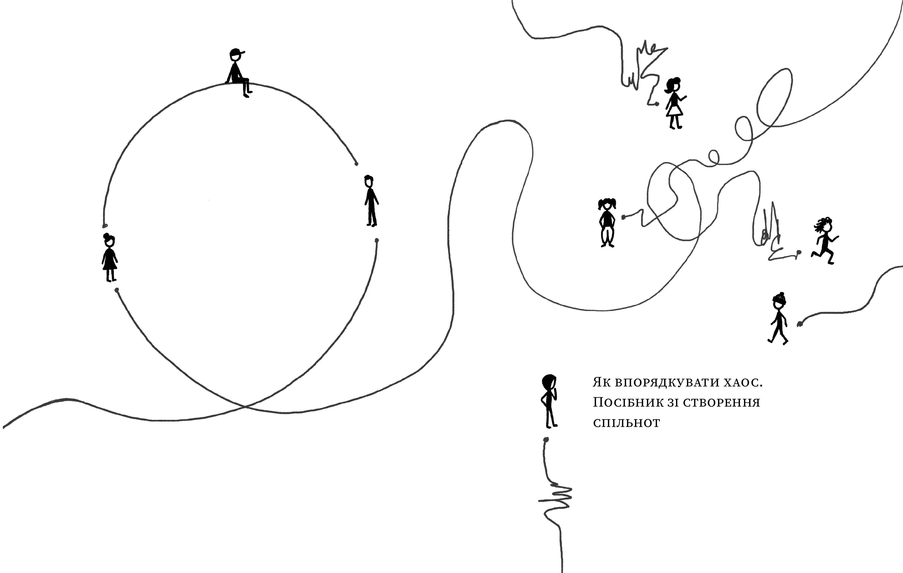

Передмова
Медіа та громадські організації звикли працювати для людей — читачів, глядачів, громад. Але сьогодні цього вже недостатньо: у світі, де довіра стає найціннішою валютою, а інформаційне середовище перевантажене й вразливе до маніпуляцій, ключове питання — як працювати разом із людьми, а не лише для них. Саме тут виникає поняття спільноти.
Спільнота — не просто група людей, підписники чи «цільова аудиторія». Це мережа небайдужих, об'єднаних спільними цінностями, досвідом або викликами. Для медіа та громадських організацій спільнота — не додатковий інструмент, а основа стійкості, впливу й довгострокових змін.
Досвід України показав: саме в умовах війни й суспільних криз спільноти стають середовищем, де народжується довіра і формується здатність суспільства не лише вистояти, а й протистояти викликам.
Посібник народився з ініціативи спільноти небайдужих. Улітку 2025 року IWPR зібрала у Києві представників 30 локальних медіа та громадських організацій на тренінг, присвячений розбудові спільнот — але заявки подали 110 організацій. Щоб задовольнити попит, IWPR продовжила програму навчання: створила закриту групу «архітекторів спільнот», провела ще вісім практичних вебінарів, а коли в групі зібралося понад 60 людей, стало зрозуміло, що самими лише навчальними програмами дефіцит знань про розбудову спільнот не закрити.
Так з'явився посібник, який ви зараз читаєте — про те, як перейти від односторонньої логіки «інформування» до двосторонньої логіки «взаємодії»: зрозуміти, що таке спільнота і як вона працює; визначити свої спільноти та їхні потреби; обрати ефективні формати взаємодії; збудувати довіру й перетворити спільноти на джерело сили, а не лише ресурс.
Бо врешті-решт сильні інституції починаються із сильних зв'язків між людьми.
Foreword
Media outlets and civil-society organisations are used to working for people — readers, viewers, communities. But today that is no longer enough: in a world where trust is becoming the scarcest currency, and the information space is overloaded and vulnerable to manipulation, the key question sounds different — how do you work together with people, not just for them? This is where the idea of community comes in.
A community is not simply a group of people, a subscriber list, or a "target audience". It is a network of people who care, united by shared values, experience or challenges. For media and civil-society organisations, community is not an add-on tool — it is the foundation of resilience, influence and long-term change.
Ukraine's experience has shown that it is precisely in wartime and periods of social crisis that communities become the environment where trust is born, and where society's capacity not just to survive, but to resist, takes shape.
This guide was itself born out of a community of people who cared. In the summer of 2025, IWPR brought together representatives of 30 local media outlets and civil-society organisations in Kyiv for a training on community building — but 110 organisations applied. To meet the demand, IWPR extended the programme: it created a closed group of "community architects", ran eight more practical webinars, and once the group had grown past 60 people, it became clear that training programmes alone could not close the knowledge gap around community building.
That is how the guide you are reading came to exist — about moving from the one-way logic of "informing" to the two-way logic of "engaging": understanding what a community is and how it works; identifying your own communities and their needs; choosing effective formats of engagement; building trust and turning communities into a source of strength, not just a resource.
Because, in the end, strong institutions begin with strong bonds between people.
Сила спільнот
Коли ви починаєте творити спільноту, ви ще не знаєте, якої вона набере сили та до яких змін призведе. Чи знали учасники страйків на гданській корабельні ім. Леніна у 1980-му, що до незалежної профспілки «Солідарність» вступлять мільйони поляків, і що це прискорить падіння комуністичного режиму?
Ефект від творення спільнот часом буває геть несподіваний. У 2005 році спільнота радіоаматорів урятувала 15 людей, які потрапили в пастку повені на даху будинку в Новому Орлеані: додзвонитися на 911 не вдавалося, але заклик про допомогу поширився через місцевий Червоний Хрест і мережу радіоаматорів. У 2011 році гравці онлайн-гри Foldit за три тижні розшифрували структуру білка ретровірусу мавп, над яким вчені билися 15 років.
Отже, не зволікайте. Творіть спільноти, а цей посібник нехай буде вам надійним помічником. Гуртуймося!Андрій Яніцький, співавтор, голова ГО «ПроМедіа»
The Power of Communities
When you start building a community, you don't yet know how much power it will gain, or what changes it will bring about. Did the workers striking at the Lenin Shipyard in Gdańsk in 1980 know that millions of Poles would join the independent trade union Solidarity, and that this would speed up the fall of the communist regime?
The effect of building communities is sometimes wildly unexpected. In 2005, a community of amateur radio operators helped save 15 people trapped on a rooftop by flooding in New Orleans: they couldn't get through to 911, but their call for help spread through the local Red Cross and the ham-radio network. In 2011, players of the online game Foldit deciphered the structure of a monkey retrovirus protein in three weeks — a puzzle scientists had been stuck on for 15 years.
So don't wait. Build communities, and let this guide be your reliable companion. Let's come together!Andrii Ianitskyi, co-author, head of ProMedia NGO
Теорія
Theory
Бульбашки демократії та боулінг на самоті. Чому спільноти важливі
Кожен із нас — учасник багатьох спільнот воднораз: родина, школа, спортивна команда, книжковий клуб, релігійна громада чи профспілка. Соціолог Фердинанд Тьонніс ще 1887 року в класичній роботі «Спільноти та суспільство» описав спільноти як форму організації, засновану на природних, емоційних чи традиційних зв'язках — на противагу суспільству, яке будується на раціональному інтересі й контракті.
Політолог Бенедикт Андерсон увів поняття «уявлених спільнот» (Imagined Communities, 1983): нація — це уявлена спільнота, де люди не знають особисто всіх її членів, але мають спільне уявлення про об'єднання. Філософ Юрген Габермас, натомість, писав про спільноти як носіїв «комунікативної дії» та елементів «життєсвіту» — простору, де раціональний діалог і публічне обговорення протистоять фрагментації, спричиненій алгоритмами соцмереж.
Спільноти є «бульбашками демократії», які допомагають нам знайти спільну мову та об'єднують нас, на противагу інформаційним бульбашкам, які викривляють наше сприйняття реальності.
Боулінг на самоті
Політолог Роберт Патнем у знаковій статті 1995 року «Bowling Alone: America's Declining Social Capital» (згодом — цілій книзі) показав тривожну тенденцію: з 1980 до 1993 року кількість боулерів у США зросла на 10%, а кількість членів ліг боулінгу зменшилася на 40%. Люди й далі грали в боулінг — але дедалі рідше разом, у спільнотах, де точилися розмови й формувалася довіра. Членство американців в асоціаціях за 25 років скоротилося майже вчетверо, а рівень довіри в суспільстві падав паралельно.
Для сучасної України ці фактори більш ніж актуальні. За даними дослідження «Українські медіа: споживання новин і довіра у 2025 році» від Internews Network, 86% українців отримують новини через екрани смартфонів, 91% читають новини зі смартфонів. Рівень довіри до державних інституцій станом на грудень 2025 року залишався відносно низьким: менше половини опитаних довіряли Уряду та Верховній Раді, суддям, прокурорам чи поліції та церкві; більше половини довіряли Збройним силам, волонтерам і Президенту.

Патнем стверджував, що зневіру можна подолати через «соціальну інженерію»: сприяти колаборації між спільнотами, підтримувати клуби за інтересами, локальний спорт, культурні події, будувати публічні простори. В Україні такі приклади вже є — від соціальних кафе Urban100 в Івано-Франківську до відновлення зруйнованих війною громад «Сміливими відновлювати». Користуючись метафорою Патнема — усе це разом повертає самотніх гравців у боулінг до командної гри.
Democracy's Bubbles and Bowling Alone. Why Communities Matter
Every one of us belongs to many communities at once: family, school, a sports team, a book club, a congregation, a trade union. As early as 1887, sociologist Ferdinand Tönnies, in his classic work "Community and Society", described communities as a form of organisation built on natural, emotional or traditional ties — as opposed to society, which is built on rational interest and contract.
Political scientist Benedict Anderson introduced the idea of "imagined communities" (1983): a nation is an imagined community whose members will never personally know most of their fellow members, yet share a mental image of their communion. Philosopher Jürgen Habermas, meanwhile, wrote about communities as bearers of "communicative action" and elements of the "lifeworld" — a space where rational dialogue and public deliberation stand against the fragmentation caused by social-media algorithms.
Communities are "bubbles of democracy" that help us find common ground and bring us together — the opposite of information bubbles, which distort our perception of reality.
Bowling Alone
Political scientist Robert Putnam, in his landmark 1995 essay "Bowling Alone: America's Declining Social Capital" (later expanded into a book), traced a troubling trend: between 1980 and 1993, the number of Americans who went bowling rose by 10%, while membership in bowling leagues fell by 40%. People kept bowling — just less and less often together, in communities where conversation happened and trust was built. Association membership among Americans fell by nearly three-quarters over 25 years, and trust in society declined in parallel.
For today's Ukraine, these same factors are more than relevant. According to the study "Ukrainian Media: News Consumption and Trust in 2025" by Internews Network, 86% of Ukrainians get their news through smartphone screens, and 91% read news on their phones. Trust in state institutions remained relatively low as of December 2025: fewer than half of respondents trusted the Government, the Verkhovna Rada, judges, prosecutors, the police, or the church; more than half trusted the Armed Forces, volunteers and the President.
Putnam argued that this erosion could be countered through "social engineering": fostering collaboration between communities, supporting hobby clubs, local sport, cultural events, and building public spaces. Ukraine already has such examples — from the Urban100 social cafés in Ivano-Frankivsk to the war-damaged communities rebuilt by Brave to Rebuild. To borrow Putnam's own metaphor — all of this, together, turns lone bowlers back into a team.
Спільна дія, емоції та гумор. Які спільноти бувають
1 грудня 2013 року обурені українці масово вийшли на вулиці — «Беркут» розігнав мирну студентську акцію на Майдані Незалежності, і кривава розправа розлетілася світом. Наступного дня, за різними оцінками, лише в Києві зібралося від 300 до 500 тисяч людей. Так народилася спільнота Майдану, а революція, що з неї виросла, призвела до втечі президента Януковича.
Схожа динаміка — коли емоційна реакція на несправедливість раптово об'єднує мільйони — не є винятково українською. Арабська весна 2010–2011 років, Occupy Wall Street із гаслом «We Are the 99%», Black Lives Matter після вбивства Джорджа Флойда, #MeToo — усі ці рухи народилися зі спалаху обурення, поширеного через соцмережі.

Афективні спільноти
Науковиця Зізі Папахаріссі описує такі протести як мобілізацію «афективної публіки» — мережевою спільнотою, що формується навколо емоцій, які циркулюють у цифрових медіа. Спочатку з'являється наратив із емоційним зарядом, потім — «вузол координації»: слоган, хештег чи спільна фраза. Афективним спільнотам притаманні мережевість, відсутність єдиного центру рішень і гнучкість — тому знищити їх силою складно.
Спільноти практики
Дослідники освіти Етьєн Венгер і Джин Лейв описують інший тип — спільноти практики: групи людей зі спільною сферою діяльності, які регулярно взаємодіють і поділяють спільні практики, мову, внутрішні жарти, символи. В Україні яскравий приклад — підрозділи Сил безпеки й оборони з упізнаваними символами й традиціями (Третій армійський корпус, «Хартія», «Азов»).
Фанатські спільноти
Теоретик Генрі Дженкінс (Textual Poachers, 1992) досліджував фанатів Star Trek, які створюють фанфіки, зіни, тематичні збори — і показав, що фанатські спільноти здатні трансформуватися у громадський активізм: організація Harry Potter Alliance використовує фентезійну історію для підтримки прав людини й кліматичних ініціатив. У 2025 році фестиваль попкультури Fancon зібрав у Києві понад 36 000 учасників — більше, ніж найбільша літературна подія року «Книжковий Арсенал» (30 000 відвідувачів).
Спільноти мають свою архітектуру, механіку й життєвий цикл. У третьому розділі книги для їх дизайну пропонується фреймворк Community Canvas, а також 7-компонентна рамка, яку представив на конференції From Societal Resilience to Obscurantism у Швеції Андрій Яніцький: цінність, формалізація, внески учасників, рівень взаємодії, спільні практики, ціннісно-емоційні фактори залучення та практичні переваги.
Collective Action, Emotion and Humour. The Kinds of Communities
On 1 December 2013, outraged Ukrainians poured into the streets en masse — riot police had dispersed a peaceful student rally on Independence Square, and the bloody footage spread around the world. The next day, by various estimates, between 300,000 and 500,000 people gathered in Kyiv alone. That is how the Maidan community was born, and the revolution that grew out of it drove President Yanukovych from the country.
A similar dynamic — an emotional reaction to injustice suddenly uniting millions — is not uniquely Ukrainian. The 2010–2011 Arab Spring, Occupy Wall Street with its slogan "We Are the 99%", Black Lives Matter after the murder of George Floyd, #MeToo — all of these movements were born out of a spark of outrage amplified through social media.
Affective publics
Researcher Zizi Papacharissi describes such protests as the mobilisation of an "affective public" — a networked community that forms and mobilises around emotions circulating through digital media. First a narrative charged with emotion appears; then a "node of coordination" emerges — a slogan, a hashtag, a shared phrase. Affective publics are networked, leaderless and flexible by nature, which is exactly what makes them hard to destroy by force.
Communities of practice
Education researchers Etienne Wenger and Jean Lave describe another type — communities of practice: groups of people who share a domain of activity, interact regularly, and share common practices, language, in-jokes and symbols. In Ukraine, a vivid example is the units of the security and defence forces with their recognisable symbols and traditions (the 3rd Assault Brigade, "Khartiia", "Azov").
Fan communities
Theorist Henry Jenkins (Textual Poachers, 1992) studied Star Trek fans who write fan fiction, publish zines, and organise themed gatherings — and showed that fan communities can transform into civic activism: the Harry Potter Alliance uses a fantasy story to campaign for human rights and climate action. In 2025, the pop-culture festival Fancon drew more than 36,000 attendees in Kyiv — more than the country's biggest literary event of the year, the Book Arsenal (30,000 visitors).
Communities have their own architecture, mechanics, and life cycle. Part three of the book offers two frameworks for designing them: the Community Canvas, and a 7-part frame presented at the "From Societal Resilience to Obscurantism" conference in Sweden by Andrii Ianitskyi: value, formalisation, member contributions, level of interaction, shared practices, value-emotional drivers of engagement, and practical benefits.
Кейси
Cases
«Екопарк Совські ставки»: як мешканцям мікрорайону вдалося відстояти зелену зону
Совські ставки — понад 20 гектарів водойм і зелені посеред Києва. У 2008 році компанія ТОВ «Господарник» отримала в оренду 19 гектарів цієї зони в Голосіївському районі під забудову торговельно-розважального комплексу. Мешканці розпочали спротив: рух «Збережи старий Київ» разом із активістами повалили паркан навколо ділянки.
Іпотечна криза 2008-го тимчасово зупинила орендаря, але за десять років — у 2018-му — проблема забудови повернулася. Тоді мешканці прилеглих мікрорайонів (Совки, Ширма, Кадетський Гай, Монтажник) створили закриту групу в соцмережах, щоб об'єднати зусилля й розподілити ролі: хтось узяв на себе інформаційно-агітаційну роботу, хтось лобіював депутатів, хтось готував юридичні звернення.
У 2019 році прокуратура виграла суд першої інстанції проти орендаря, а 2021-го Верховний Суд остаточно повернув земельну ділянку киянам. Того ж року активісти юридично оформили спільноту у вигляді ГО «Екопарк Совські ставки».

Наразі до організації «Екопарк Совські ставки» належать 12 людей, а в закритій групі активних захисників — близько трьох десятків. Громаду підтримують депутати міської ради різних фракцій, а в 2025 році мешканці вперше відзначили День Совських ставків — із толокою, читаннями й дитячим конкурсом малюнка.
7 порад від захисників Совських ставків
- Об'єднуйте зусилля. Лише одна організація — екологічна чи місцевого самоврядування — не змогла б ефективно протистояти забудовникам.
- Зустрічайтеся та домовляйтеся про майбутнє. Спільне бачення результатів роботи допомагає рухатися в одному напрямку.
- Не зупиняйтеся, аж поки не побачите результату. Кожне нове зусилля рухало справу — навіть через десять років.
- Розподіліть ролі в спільноті однодумців, щоб кожен мав власну ділянку роботи.
- Залучайте на свій бік стейкхолдерів.
- Створіть соцмережі, сайт, інші платформи — навіть якщо медіа спочатку ігноруватимуть вас, ви будете почуті.
- Залучайте до роботи юристів. Юридичний напрямок часто недооцінений, а дарма.
"Sovski Stavky Eco-Park": How a Neighbourhood Defended Its Green Space
Sovski Stavky is more than 20 hectares of ponds and green space in the middle of Kyiv. In 2008, the company Hospodarnyk LLC leased 19 hectares of this land in Kyiv's Holosiivskyi district to build a shopping and entertainment complex. Residents fought back: the "Save Old Kyiv" movement, together with local activists, tore down the fence around the site.
The 2008 mortgage crisis temporarily stalled the developer, but ten years later, in 2018, the threat of construction returned. Residents of the surrounding neighbourhoods (Sovky, Shyrma, Kadetskyi Hai, Montazhnyk) formed a closed group on social media to pool their efforts and split up roles: some took on information and campaigning work, some lobbied city councillors, some prepared legal appeals.
In 2019, the prosecutor's office won the first-instance case against the leaseholder, and in 2021 the Supreme Court finally returned the land to the residents of Kyiv. That same year, the activists formally registered their community as the NGO "Sovski Stavky Eco-Park".
Today, the "Sovski Stavky Eco-Park" organisation has 12 formal members, and its closed group of active defenders numbers around three dozen. The community is backed by city councillors from several parties, and in 2025 residents celebrated Sovski Stavky Day for the first time — with a communal clean-up, readings, and a children's drawing contest.
7 tips from the defenders of Sovski Stavky
- Join forces. No single organisation — environmental or local self-government — could have stood up to the developers alone.
- Meet and agree on the future. A shared vision of the outcome keeps everyone moving in the same direction.
- Don't stop until you see results. Every new push moved the case forward — even across a ten-year span.
- Split roles within the community of like-minded people, so everyone owns their own piece of the work.
- Win stakeholders over to your side.
- Build social media, a website, other platforms — even if the media ignore you at first, you will still be heard.
- Bring lawyers on board. The legal track is often underrated, and that's a mistake.
Екодія: як громадська організація перетворює спільноту на інструмент змін
«Екодія» — київська екологічна організація, заснована 2017 року. Займається боротьбою зі зміною клімату, зеленим енергетичним переходом і сталим землекористуванням, а паралельно розвиває спільноту з понад 55 тисяч підписників у соцмережах, сотень волонтерів та учасників.
«Екодія» описує свою спільноту як піраміду з п'яти рівнів залучення: в основі — підписники соцмереж і читачі щотижневої розсилки; далі — прибічники, друзі й партнери, які підтримують організацію щомісячним внеском; на вершині — волонтери, співробітники та члени, що формують найвищий керівний орган — Загальні збори.
«Потрапити до членської програми можна лише за рекомендацією двох наявних членів — щоб до кола спільноти з найбільшим впливом на команду потрапляли люди, які вже знають організацію та поділяють її цінності», — пояснює Ольга Тарасенко.

За дев'ять років роботи зі спільнотою в «Екодії» виробили базовий принцип: не просити людей про те, чого організація не готова зробити сама. Підтримка спільноти стала аргументом у розмовах з посадовцями: саме завдяки багаторічному тиску спільноти, який супроводжував підготовку самого закону, у 2026 році ухвалили кліматичний закон із ціллю досягти кліматичної нейтральності до 2050 року.
5 порад від Екодії
- Мати чітку відповідь на питання «навіщо нам спільнота?» — і щоб цю відповідь розуміла вся організація.
- Закладати реальні ресурси: відповідальних, час і гроші.
- Не чекати швидких результатів — спільнота будується на довірі, а довіра потребує часу.
- Практикувати двосторонню комунікацію: ніхто не знає вашу аудиторію краще за неї саму.
- Пам'ятати про правило 1-9-90 — і це нормально.
Ecoaction: How an NGO Turns Its Community into a Tool for Change
Ecoaction is a Kyiv-based environmental organisation founded in 2017. It fights climate change, pushes for a green energy transition and sustainable land use — and, alongside that work, has built a community of more than 55,000 social-media followers and hundreds of volunteers and members.
Ecoaction describes its community as a five-level pyramid of engagement: at the base are social-media followers and readers of the weekly newsletter; next come supporters, friends and partners who back the organisation with a monthly contribution; at the top are the volunteers, staff and members who make up the highest governing body — the General Assembly.
"You can only join the membership programme on the recommendation of two existing members — so that the inner circle, the one with the most influence on the team, is made up of people who already know the organisation and share its values," explains Olha Tarasenko.
Over nine years of working with its community, Ecoaction settled on one core principle: never ask people to do what the organisation itself isn't willing to do. Community support has become an argument in conversations with officials: it was precisely the years of community pressure accompanying the drafting of the law itself that helped Ukraine pass a climate law in 2026, targeting climate neutrality by 2050.
5 tips from Ecoaction
- Have a clear answer to "why do we need a community?" — one the whole organisation understands.
- Set aside real resources: people responsible for it, time, and money.
- Don't expect quick results — a community is built on trust, and trust takes time.
- Practice two-way communication: nobody knows your audience better than the audience itself.
- Remember the 1-9-90 rule — and that it's completely normal.
Триматися своїх: історія зростання спільноти The Ukrainians Media
Історія The Ukrainians Media починається з травня 2014 року — троє друзів, Тарас Прокопишин, Іна Березницька й Володимир Беглов, запустили студентський волонтерський блог, що публікував лонгриди про ініціативних українців. Пізніше до команди долучилася редакторка Марічка Паплаускайте.
З роками блог розрісся в незалежну медійну екосистему: онлайн-журнал The Ukrainians, друкований журнал літературного репортажу Reporters, новинне видання НЗЛ, сторітелінгову й подкаст-студію, видавництво The Ukrainians Publishing.

У травні 2020 року, у час пандемії, коли медійники усвідомили ризики залежності від грантів, TUM запустила платний членський клуб — спільноту. Перед запуском команда створила закритий документ на вісім сторінок із поясненням, чому варто підтримувати TUM, і персонально написала 400–500 людям. Ще до запуску медійники знали — у них буде як мінімум 200 членів.
«Це був стрибок віри! Але коли з'явилися перші помітні фінансові результати, скепсис зменшився. І спільнота стала не просто експериментом, а шляхом до стійкості. Наша спільнота — баланс між емоційним та раціональним. Емоціо — бути причетним, а раціо — можливість отримувати якісний продукт», — говорить Тарас Прокопишин.
Долучитися до спільноти можна через один із рівнів підписки — «Фанатський», «Амбасадорський digital» чи «Амбасадорський digital & print», кожен зі своїм набором переваг: рання доступа до текстів, доступ до Книжкового клубу, знижки на друкований Reporters. Впізнаваний елемент спільноти — торбинки-мерч «Амбасадорські», які маркують «своїх» на подіях.
У січні 2025 року призупинення програм USAID стало фінансовим викликом для багатьох медіа — Прокопишин звернувся до читачів з поясненням можливих наслідків, і за одну добу до спільноти долучилися 70 нових людей.
5 порад на етапі запуску спільноти
- Подумайте про ціннісну пропозицію. Ви маєте чітко пояснити людям, чому вони мають підтримати саме вас.
- Закладайте поступовий фундамент — не намагайтеся одразу будувати складні системи чи великі екосистеми.
- Мудро працюйте з перевагами для членів — тестуйте, що працює, а що ні.
- Оберіть, хто в команді драйвитиме спільноту — людину, яка вірить в ідею й готова вести спільноту на початковому етапі.
- Фокус на людей, а не на трафік.
Sticking With Your Own: The Growth Story of The Ukrainians Media Community
The story of The Ukrainians Media begins in May 2014 — three friends, Taras Prokopyshyn, Ina Bereznytska and Volodymyr Behlov, launched a student volunteer blog publishing long reads about proactive Ukrainians. Editor Marichka Paplauskaite later joined the team.
Over the years the blog grew into an independent media ecosystem: the online magazine The Ukrainians, the printed literary-reportage journal Reporters, the news outlet NZL, a storytelling and podcast studio, and the publishing house The Ukrainians Publishing.
In May 2020, in the middle of the pandemic, when media professionals became painfully aware of the risks of depending on grants, TUM launched a paid membership club — its community. Ahead of the launch, the team drafted an eight-page closed document explaining why TUM was worth supporting, and personally messaged 400–500 people. Before launch day, the team already knew they'd have at least 200 members.
"It was a leap of faith! But once the first real financial results came in, the scepticism eased. And the community stopped being just an experiment and became a path to sustainability. Our community is a balance between the emotional and the rational. The emotional part is about belonging; the rational part is about getting a quality product," says Taras Prokopyshyn.
You can join the community through one of three tiers — "Fan", "Digital Ambassador" or "Digital & Print Ambassador" — each with its own set of perks: early access to articles, access to the Book Club, discounts on the printed Reporters. A recognisable community item is the "Ambassador" tote bag, which marks "your own people" at events.
In January 2025, the pause in USAID programmes hit many media outlets financially — Prokopyshyn wrote to readers explaining the possible consequences, and within a single day 70 new people joined the community.
5 tips for launching a community
- Think through your value proposition. You need to clearly explain to people why they should support you specifically.
- Build a gradual foundation — don't try to build complex systems or big ecosystems right away.
- Be smart about member perks — test what works and what doesn't.
- Choose who on the team will drive the community — someone who believes in the idea and is ready to lead it in its early stage.
- Focus on people, not traffic.
Цукр: як онлайн-журнал із прифронтових Сум побудував спільноту, що тримає місто разом
Суми — обласний центр за 30 кілометрів від кордону з Росією, сьогодні прифронтове місто. Спільнота «Цукру» почала формуватися ще до появи самого медіа — влітку 2017–2018 років команда «Міста розумних» запозичила столичний формат нетворкінг-зустрічей і першою серед обласних центрів організувала таку в Сумах: підприємці, активісти, представники влади збиралися для неформального спілкування — без презентацій і заданих тем, лише розмова між «своїми».

«Ми не намагалися зафіксувати всі контакти, а просто створювали спільноту активних сум'ян», — згадує співзасновник і голова правління організації Дмитро Тіщенко.
Дослідження аудиторії за методологією Jobs To Be Done показало неочікуване: люди платять не за бенефіти — вони платять за підтримку «своїх». Близько 70% підписників Клубу Цукру — сум'яни, які хочуть бути причетними до змін у місті; близько 30% — ті, хто виїхав із міста, але зберіг емоційний зв'язок і хоче лишатися в діалозі з ним.
За перші два тижні повномасштабного вторгнення Telegram-канал Цукру виріс із 2000 до 20000 підписників — спрацювало емоційне звернення «ми залишаємося в місті й продовжуємо роботу». У 2025 році команда вклала 800 тисяч гривень у технічну розробку платформи Клубу.
5 порад для тих, хто будує спільноту навколо медіа
- Починайте зі знайомства. Люди поки не готові платити лише за медіа — треба виходити за межі й мати «намацальні» способи контактів.
- Досліджуйте мотивацію, а не демографію.
- Людей треба кликати — і давати конкретну дію. Аудиторія готова допомагати, але рідко ініціює щось сама.
- Будуйте екосистему точок взаємодії. Журнал — вхід, Клуб — глибша залученість, крамниця — фізичний прояв ідентичності.
- Ведіть чесну комунікацію. Емоційний зв'язок будується через прозорість, а не через пресрелізи.
Tsukr: How an Online Magazine from Front-Line Sumy Built a Community That Holds the City Together
Sumy is a regional capital 30 kilometres from the Russian border — today, a front-line city. Tsukr's community began forming before the outlet itself even existed: back in 2017–2018, the team behind "City of Smart People" borrowed the capital's networking-meetup format for proactive young people, and became the first regional capital to run one in Sumy — entrepreneurs, activists, and officials gathered for informal conversation, with no presentations or set topics, just a conversation among "their own".
"We weren't trying to catalogue every contact — we were simply building a community of active Sumy residents," recalls co-founder and chair of the board Dmytro Tishchenko.
Audience research using the Jobs To Be Done methodology revealed something unexpected: people don't pay for benefits — they pay to support "their own". About 70% of Tsukr Club subscribers are Sumy residents who want to feel involved in the city's changes; about 30% have left the city but kept an emotional bond to it and want to stay in dialogue with it.
In the first two weeks of the full-scale invasion, Tsukr's Telegram channel grew from 2,000 to 20,000 subscribers, driven by an emotional message: "we're staying in the city and continuing our work." In 2025 the team invested 800,000 hryvnias in the technical development of the Club platform.
5 tips for building a community around a media outlet
- Start with getting to know people. People aren't yet ready to pay for media alone — you need to reach beyond it and have "tangible" ways of making contact.
- Study motivation, not demographics.
- People need to be called to action — and given something concrete to do. Audiences are willing to help, but rarely initiate anything themselves.
- Build an ecosystem of touchpoints. The magazine is the entry point, the Club is deeper engagement, the shop is a physical expression of identity.
- Communicate honestly. Emotional connection is built through transparency, not press releases.
«Повернись живим» і спільнота «Дронопаду»
Навесні 2014-го кілька волонтерів методично скуповували бронежилети за власні гроші й донати, зібрані через соцмережі — і лишали на кожному бронежилеті настанову: «Повернись живим». Так з'явився Фонд, що згодом залучив 42 мільярди гривень для Сил оборони.
У 2024 році команда, що виросла з кількох людей до понад сотні, запустила «Дронопад» — проєкт зі збиття російських безпілотників відносно дешевими засобами. Ідея виявилася доступною й водночас нереалістичною без ризику — та команда вирішила спробувати новий підхід: індивідуальний до кожного з військових підрозділів, замість хаотичної роздачі обладнання.

Титульним партнером стала мережа АЗС ОККО: заправляючись, водії стали донатити «на дрони» — партнерство закрило за менш ніж рік близько 350 мільйонів гривень. Влітку 2025-го відбувся наймасовіший разовий збір: Atlas Festival разом із ПриватБанком зібрали на «Дронопад» сто мільйонів гривень.
«Дронопад» — це не лише техніка, а люди, які повірили в одну ідею.
"Come Back Alive" and the "Dronopad" Community
In spring 2014, a handful of volunteers were methodically buying body armour with their own money and donations collected through social media — leaving the same note on every vest: "Come back alive." That's how the Foundation came to exist, and it went on to raise 42 billion hryvnias for the defence forces.
In 2024, a team that had grown from a handful of people to more than a hundred launched "Dronopad" — a project for shooting down Russian drones using relatively cheap means. The idea was accessible in theory but unrealistic without taking a risk — so the team tried a new approach: tailoring support individually to each military unit, instead of handing out equipment indiscriminately.
OKKO, the fuel-station chain, became the project's title partner: drivers started donating "for drones" at the pump — the partnership raised close to UAH 350 million in under a year. In summer 2025, the single biggest fundraiser took place: Atlas Festival, together with PrivatBank, raised UAH 100 million for "Dronopad".
"Dronopad" isn't only about hardware — it's about people who believed in one idea.
Сміливі відновлювати
«Сміливі відновлювати» — благодійний фонд з відбудови міст і сіл України, який на кінець 2025 року налічував понад 2000 волонтерів у власній спільноті. У травні 2022 року засновники Альона Крицюк і Віталій Селик приїхали з гуманітарною допомогою в Бучу та Ірпінь — і побачили масштаб руйнувань. З'явилася ідея залучити перших волонтерів до розбору завалів; спершу це були друзі й знайомі, здебільшого студенти.
Переломним моментом стала можливість для волонтерів лишатися на вихідні з ночівлею у Пластунському центрі в Бучі. Саме неформальні моменти після виснажливої фізичної праці — рефлексії, знайомства, розмови при свічках — створили зв'язки, що змусили людей повертатися заради інших людей, а не лише заради роботи.

Коли за рік кількість українських волонтерів почала скорочуватися через мобілізацію й міграцію, «Сміливі» зробили стратегічну ставку на іноземних волонтерів — професійних будівельників, які можуть виїхати на тиждень у віддалену громаду. Фактично іноземці сформували власну підспільноту з механізмами взаємодопомоги, а українська й іноземна частини спільноти тримаються єдиним двомовним каналом комунікації.
6 порад від команди «Сміливих відновлювати»
- Спільнота не може будуватися виключно на задачах. Толоки — ядро діяльності, але зв'язки між людьми формуються поза роботою.
- Успіх спільноти залежить від координаторів — людей, які щиро цікавляться учасниками.
- Спільнота потребує постійного оновлення. Модель, що працювала у 2022-му, вже не працює у 2025-му.
- Диверсифікація знижує ризики. Залежність від одного джерела волонтерів чи фінансування робить спільноту вразливою.
- Давайте учасникам впливати на стратегію.
- Стійкі спільноти виникають зі спільного досвіду — фізичної праці, подолання труднощів, відчуття осмисленості.
Brave to Rebuild
"Brave to Rebuild" is a charitable foundation rebuilding Ukraine's damaged towns and villages, whose own community numbered more than 2,000 volunteers by the end of 2025. In May 2022, founders Alona Krytsiuk and Vitalii Selyk arrived in Bucha and Irpin with humanitarian aid — and saw the scale of destruction. The idea emerged to bring in the first volunteers to clear rubble; at first these were mostly friends and acquaintances, largely students.
A turning point was the chance for volunteers to stay overnight over the weekend at the Plast youth centre in Bucha. It was precisely those informal moments after exhausting physical labour — reflections, new acquaintances, conversations by candlelight — that forged the bonds which brought people back for the sake of other people, not just the work itself.
When, a year in, the number of Ukrainian volunteers began to shrink because of mobilisation and migration, "Brave" made a strategic bet on foreign volunteers — professional builders who can take a week off to work in a remote community. Foreign volunteers effectively formed their own sub-community with its own mechanisms of mutual support, while the Ukrainian and international parts of the community stay connected through a single bilingual communication channel.
6 tips from the Brave to Rebuild team
- A community can't be built on tasks alone. Work parties are the core activity, but the bonds between people form outside of the work itself.
- A community's success depends on its coordinators — people who are genuinely interested in its members.
- A community needs constant renewal. A model that worked in 2022 no longer works in 2025.
- Diversification lowers risk. Depending on a single source of volunteers or funding makes a community vulnerable.
- Let members shape the strategy.
- Resilient communities grow out of shared experience — physical labour, overcoming hardship, a sense of meaning.
Razom for Ukraine: Як спільнота однодумців створила глобальну мережу підтримки України
У 2014 році, під час Революції Гідності, група українських та українсько-американських волонтерів у Нью-Йорку — Оля Яричківська, Марія Сорока, Люба Шипович та інші — заснували «Razom» («разом») — назва, що відображає головну ідею: справжні зміни можливі тоді, коли люди діють разом.

Razom функціонує як мережа взаємної підтримки: у кожного свій шлях входу — культурні події (Razom Book Club, Ukrainian Cultural Festival у Нью-Йорку), волонтерство або професійні проєкти. Окремий напрям — адвокація: щороку Razom проводить Ukraine Action Summit у Вашингтоні, де активісти з різних штатів зустрічаються з американськими законодавцями.
Професійний вимір — медична ініціатива Co-Pilot (з 2016 року), яка об'єднує лікарів з України та інших країн для обміну практиками за принципом train-the-trainer. З часом така співпраця переростає у справжню професійну спільноту.
5 практичних порад для тих, хто хоче будувати спільноти
- Починайте з цінностей, а не зі структури. Спільнота формується навколо спільної мети та ідеї.
- Створюйте простір для участі. Люди залишаються у спільноті, коли можуть не лише підтримувати, а й діяти.
- Розвивайте регулярні формати взаємодії. Книжкові клуби, фестивалі, зустрічі чи адвокаційні події допомагають людям відчувати причетність.
- Працюйте через партнерства. Співпраця з іншими організаціями допомагає зміцнювати громадянське суспільство.
- Думайте про довгострокову перспективу. Спільнота повинна бути готовою підтримувати зміни протягом років.
Razom for Ukraine: How a Community of Like-Minded People Built a Global Support Network for Ukraine
In 2014, during the Revolution of Dignity, a group of Ukrainian and Ukrainian-American volunteers in New York — Olya Yarychkivska, Maria Soroka, Luba Shypovych and others — founded "Razom" ("together") — a name that captures its core idea: real change is only possible when people act together.
Razom functions as a network of mutual support: everyone has their own way in — cultural events (the Razom Book Club, the Ukrainian Cultural Festival in New York), volunteering, or professional projects. Advocacy is a separate strand: every year Razom runs the Ukraine Action Summit in Washington, D.C., where activists from across the country meet with American lawmakers.
Its professional dimension is the Co-Pilot medical initiative (since 2016), which connects doctors from Ukraine and other countries to exchange practice on a train-the-trainer basis. Over time, this kind of collaboration grows into a genuine professional community.
5 practical tips for anyone who wants to build communities
- Start with values, not structure. A community forms around a shared purpose and idea.
- Create space for participation. People stay in a community when they can do more than support it — they can act within it.
- Develop regular formats of engagement. Book clubs, festivals, meet-ups or advocacy events help people feel a sense of belonging.
- Work through partnerships. Collaborating with other organisations helps strengthen civil society.
- Think long-term. A community has to be ready to sustain change over years.
Практика
Practice
Дизайн спільноти. З чого розпочати
Спільнота — це група людей, які мають спільну ідентичність (умови для життя, досвід, інтереси, цілі, потреби), систему стосунків та зв'язків між собою й певну структуру взаємодії, навіть якщо вона неочевидна. Робота зі спільнотою починається з усвідомленого підходу: чи справді ми працюємо зі спільнотою — можна перевірити чотирма послідовними питаннями.
- Чи є в нас група людей, яку ми можемо об'єднати в спільноту? Медіаспільнотою може ставати аудиторія читачів; для громадської організації — волонтери, учасники подій, партнери.
- Чи має наша група людей спільну ідентичність (або потенціал до її формування)?
- Чи люди всередині нашої групи мають зв'язки між собою (або потенціал до їх формування)? Це головна демаркаційна лінія між спільнотою і не-спільнотою: справжня спільнота з'являється тоді, коли між людьми виникають горизонтальні взаємодії, які переростають у зв'язки та стосунки.
- Чи є структура всередині вашої спільноти? Безліч спільнот існують без формалізованої чіткої структури — і це не критично.
Чітке визначення зовнішньої мети — «навіщо спільнота потрібна нам як організації» — робить спільноту значно успішнішою. Серед позитивних ефектів: системне залучення та зміни (замість разових ініціатив), збір коштів, розвиток бренду, зворотний зв'язок та інновації, адвокація та вплив, ресурси й партнерства.

Один з найкращих допоміжних інструментів для детального дизайнування спільноти — The Community Canvas: три послідовні частини (ідентичність, досвід, структура), поділені на 17 підтем, які дають змогу зануритись у різні аспекти функціонування спільноти.
Designing a Community. Where to Start
A community is a group of people who share an identity (living conditions, experience, interests, goals, needs), a system of relationships and connections with one another, and some structure of interaction — even if that structure isn't obvious. Working with a community starts with a deliberate approach: whether you're actually working with a community can be checked with four sequential questions.
- Do we have a group of people we can unite into a community? A media outlet's community can be its readership; for an NGO, it can be volunteers, event participants, partners.
- Does our group of people share a common identity (or the potential to form one)?
- Do the people within our group have connections to one another (or the potential to form them)? This is the main dividing line between a community and a non-community: a genuine community appears once horizontal interactions between people start growing into bonds and relationships.
- Is there structure inside your community? Plenty of communities exist without a formalised, clear structure — and that's not a problem.
A clearly defined external purpose — "why does our organisation need a community" — makes a community far more successful. Among the positive effects: systemic engagement and change (instead of one-off initiatives), fundraising, brand development, feedback and innovation, advocacy and influence, resources and partnerships.
One of the best tools for the detailed design of a community is the Community Canvas: three sequential parts (identity, experience, structure) broken down into 17 sub-topics, letting you dig into every different aspect of how a community functions.
Цільова аудиторія. Дивіться очима людей
Створення організації чи медіа починається з двох ключових питань: для чого і для кого. Мета визначає вашу унікальність, а цільова аудиторія — її кристалізує. Формування портрета аудиторії не варто описувати один раз і назавжди — демографічні характеристики дають лише певне розуміння, важливіше мати два-три чітко прописані портрети «ядра» й суміжних сегментів.
Окрім сегментації за демографією, популярний підхід — сегментація за потребами. Медіакорпорація BBC відома своєю Моделлю користувацьких потреб (User Needs Model, 2016–2017): поінформуйте мене, покажіть мені перспективу, навчіть мене, тримайте мене в курсі трендів, розкажіть мені про щось складне, надихайте мене. Видання The Atlantic 2022 року запропонувало власну версію: глибина й контекст, нові ідеї, виклик моїм припущенням, змістовна пауза, знайомство з високопрофесійними авторами.
«Я помітила, що мої тодішні однолітки — молодь років 20 — не читають новини. Мене це непокоїло — особливо тому, що наближалися президентські вибори», — пояснює Анастасія про створення медіа «Свідомі», яке обрало формат п'яти найважливіших новин на день — чітко, коротко і по суті.
Робота з аудиторією — завжди живий процес: за кілька днів до повномасштабного вторгнення Росії «Свідомі» опублікували матеріал «10 причин, чому все буде добре» — і його підхопили блогери, читачі масово підписувалися на сторінку медіа. Це був органічний ріст без платного просування, який лише посилився в перші дні великої війни: за два місяці вторгнення аудиторія зросла вдвічі, до 100 тисяч підписників в Instagram.
Your Target Audience. See Through People's Eyes
Building an organisation or a media outlet starts with two key questions: what for, and for whom. Your purpose defines your uniqueness; your target audience crystallises it. Don't describe your audience portrait just once and consider it fixed — demographic traits only give you so much; it matters more to have two or three clearly written portraits of your "core" and adjacent segments.
Besides demographic segmentation, a popular approach is segmentation by need. The BBC is known for its User Needs Model (2016–2017): update me, give me perspective, educate me, keep me on trend, divert me, inspire me. The Atlantic proposed its own version in 2022: depth and context, new ideas, challenge my assumptions, a meaningful pause, meeting highly credentialed authors.
"I noticed that people my age at the time — 20-somethings — weren't reading the news. That worried me, especially with a presidential election approaching," explains Anastasiia about creating Svidomi, a media outlet that chose the format of five most important news items a day — clear, short, to the point.
Working with an audience is always a living process: a few days before Russia's full-scale invasion, Svidomi published a piece titled "10 reasons everything will be okay" — bloggers picked it up, and readers subscribed to the page en masse. It was organic growth with no paid promotion, one that only intensified in the first days of the full-scale war: within two months of the invasion, the audience doubled to 100,000 followers on Instagram.
Технології важливі. Як керувати увагою
Змагання за підписників у медіа і за донати в громадських організаціях поступово перетворюються на боротьбу за утримання уваги. Дві головні задачі в цьому змаганні: продовжувати бути цікавими й залишатися в побутовій орбіті людини. Є три групи запитань, на які допомагають відповісти технології: як контент тримає увагу, звідки приходять користувачі, як повернути тих, хто відписався.
- Chartbeat / IO Technologies / Parse.ly
- Аналітика утримання уваги в реальному часі: що дійсно тримає читача, а не просто «скільки переглядів». Chartbeat — дорожчий, для великих редакцій; IO Technologies — доступніший для середніх і малих; Parse.ly сильний в аналізі повторюваних візитів і довгострокової лояльної аудиторії.
- Google Analytics 4 / Mixpanel / Amplitude / Matomo
- Звідки приходять читачі й потенційні підписники: канали трафіку, шлях до конверсії. GA4 — безкоштовний і найпоширеніший; Mixpanel і Amplitude — дорожчі інструменти для глибшого моделювання поведінки; Matomo — альтернатива для тих, хто не хоче залежати від Google.
- Mailchimp / MailerLite / Klaviyo / ActiveCampaign
- Повернення тих, хто пішов: персоналізовані email-розсилки. Mailchimp і MailerLite — прості, для малих і середніх редакцій; Klaviyo й ActiveCampaign — глибша персоналізація й сегментація для просунутих команд.
- Slack / Google Workspace / Notion / Miro
- Інструменти для внутрішньої команди: Slack — оперативна комунікація; Google Workspace — спільні документи й відеозв'язок; Notion — база знань, шаблони й документи (але слабший в оперативних обговореннях); Miro — візуальна дошка для мозкових штурмів і побудови редакційних процесів.
У світі повного штучного контенту і платформи, що постійно змінюються, виживуть ті, до кого приходять не випадково, а спеціально. Тих, кого вручну будуть вбивати в рядку пошуку.
Technology Matters. Managing Attention
The competition for subscribers in media, and for donations at NGOs, is gradually turning into a competition for retained attention. Two core tasks in this contest: keep being interesting, and stay within a person's everyday orbit. There are three groups of questions that technology helps answer: what keeps content sticky, where users come from, and how to win back those who unsubscribed.
- Chartbeat / IO Technologies / Parse.ly
- Real-time attention analytics: what actually holds a reader, not just "how many pageviews". Chartbeat is pricier, built for large newsrooms; IO Technologies is more affordable for mid-size and small teams; Parse.ly excels at analysing repeat visits and long-term loyal audiences.
- Google Analytics 4 / Mixpanel / Amplitude / Matomo
- Where readers and would-be subscribers come from: traffic channels, the path to conversion. GA4 is free and the most widely used; Mixpanel and Amplitude are pricier tools for deeper behaviour modelling; Matomo is an alternative for teams that don't want to depend on Google.
- Mailchimp / MailerLite / Klaviyo / ActiveCampaign
- Winning back people who left: personalised email newsletters. Mailchimp and MailerLite are simple, for small and mid-size newsrooms; Klaviyo and ActiveCampaign offer deeper personalisation and segmentation for advanced teams.
- Slack / Google Workspace / Notion / Miro
- Tools for the internal team: Slack for fast communication; Google Workspace for shared documents and video calls; Notion as a knowledge base, templates and documents (though weaker for live discussion); Miro as a visual board for brainstorming and mapping editorial processes.
In a world full of AI-generated content and constantly shifting platforms, the ones who survive are the ones people seek out on purpose, not by accident — the ones who get hand-picked in the search bar.
Ритуали. Спільнота практики
У цьому розділі книги ритуали й спільні практики розглядаються на прикладі Національної скаутської організації України «Пласт». Пласт виник у Львові в 1912 році, тричі забороненою, «емігрував» на захід і відновлений в Україні 1989 року. Сьогодні Пласт налічує понад 20 000 членів різного віку і 140 осередків.

«Через те, що наша організація така велика, ми не завжди відчуваємо, наскільки вона сильна й спроможна — велика спільнота рідко робить щось разом. Переважно кожна невелика група дорослих, яких у Пласті ми називаємо куренями, роблять речі, покликані навчити наших виховнців якійсь певній спеціалізації», — пояснює власне здивування Дарина Доскач.
Символи мають у Пласті надзвичайну роль: гасло привітання «СКОБ!» (Сильно, Красно, Обережно і Бистро), курінні назви, числа, барви, хустки. Важливою частиною пластового життя є церемоніали — складання Пластової присяги, надання ступенів, посвята прапора, вшанування пам'ятних дат. У спільному колі, при вогні, під час урочистих слів присяги виникає особлива атмосфера, яку важко передати словами — саме в такі миті народжується довіра.
Три кроки перекладання досвіду на медіа й ГО
- Чітке формулювання місії та цінностей спільноти — не лише сформулювати, а й комунікувати послідовно.
- Формування ядра спільноти — перші 10–20 активних учасників, які задають тон взаємодії й стають неформальними амбасадорами.
- Створення простору для взаємодії — цифрові інструменти або живі зустрічі; останні дають сильніше відчуття приналежності.
Ключова умова довгострокового існування спільноти — довіра, яка формується через прозорість рішень, повагу до учасників, відкриту комунікацію та персоналізовану взаємодію.
Rituals. A Community of Practice
This chapter looks at how rituals and shared practices build a community, using the example of Plast, Ukraine's national scouting organisation. Plast was founded in Lviv in 1912, was banned three times, "emigrated" to the West, and was revived in Ukraine in 1989. Today Plast has more than 20,000 members of all ages across 140 chapters.
"Because our organisation is so large, we don't always feel how strong and capable it is — a large community rarely does something all together. Mostly it's each small group of adults, what we in Plast call a kurin, doing things meant to teach our members some specific skill," says Daryna Doskach, describing her own surprise at this.
Symbols carry extraordinary weight in Plast: the greeting motto "SKOB!" (Strong, Beautiful, Careful and Swift), kurin names, numbers, colours, neckerchiefs. Ceremonies are a vital part of Plast life — taking the Plast oath, awarding ranks, consecrating the flag, honouring memorial dates. In the shared circle, by the fire, during the solemn words of the oath, a particular atmosphere arises that is hard to put into words — and it is in exactly those moments that trust is born.
Three steps for translating this experience to media and NGOs
- A clear articulation of the community's mission and values — not just stating it once, but communicating it consistently.
- Forming a community core — the first 10–20 active members who set the tone of engagement and become informal ambassadors.
- Creating space for interaction — digital tools or live meetings; the latter give a stronger sense of belonging.
The key condition for a community's long-term survival is trust, which is built through transparent decisions, respect for members, open communication, and personalised engagement.
Вимірювання успіху
«Скажіть, будь ласка, куди мені звідси йти?» — «А куди ти хочеш потрапити?» — відповів Кіт. — «Мені все одно...» — «Тоді все одно, куди йти», — зауважив Кіт. З книги «Аліса в Країні Див» Льюїса Керролла.
Якщо спільнота — не побічний продукт вашої повсякденної діяльності, а її основа, без вимірювання успіху не обійтися. Регулярно опитуйте як членів спільноти, так і ширшу аудиторію прихильників; поєднуйте кількісні опитування з якісними дослідженнями (фокус-групами); слідкуйте за глибиною читання, відкриттями розсилок і зворотним зв'язком у коментарях.
| Метрика | Формула | Опис | Добрий показник |
|---|---|---|---|
| NPS | % Промоутерів (9–10) − % Критиків (0–6) | Лояльність: готовність рекомендувати | > 50 |
| SF (Sticky Factor) | (DAU / MAU) × 100% | Частота взаємодії: щоденні vs місячні активні користувачі | 20–50% |
| CAC | Витрати на залучення / Кількість нових членів | Вартість залучення одного учасника | < 1/3 LTV |
| Retention Rate | (Користувачі на кінець / На старті) × 100% | Утримання на 30/60/90 днів | > 70% на 30 днів |
| Churn Rate | 100% − Retention Rate | Відтік підписників | < 5% щомісяця |
| ARPU | Загальний дохід / Кількість членів | Середній дохід з одного учасника | Зростає щоквартально |
| LTV | ARPU / Churn (спрощено, десятковий churn) | Сумарний дохід з учасника за весь час | > 3 × CAC |
| LTV/CAC Ratio | LTV / CAC | Прибутковість: дохід vs витрати на залучення | ≥ 3:1 |
Показник CAC сам по собі нічого не говорить — його варто порівнювати з LTV: вартість залучення має бути помітно меншою за доходи від одного члена спільноти, інакше спільнота генерує збитки замість прибутку. Бажаним є рівень співвідношення LTV/CAC 1 до 3 і більше.
Не можна покращити те, чого не вимірюєш.
Measuring Success
"Would you tell me, please, which way I ought to go from here?" "That depends a good deal on where you want to get to," said the Cat. "I don't much care where—" said Alice. "Then it doesn't matter which way you go," said the Cat. From Lewis Carroll's Alice in Wonderland.
If a community isn't a byproduct of your everyday work but its very foundation, there's no getting around measuring success. Regularly survey both community members and your broader base of supporters; combine quantitative surveys with qualitative research (focus groups); track reading depth, newsletter opens, and feedback in the comments.
| Metric | Formula | Description | Good benchmark |
|---|---|---|---|
| NPS | % Promoters (9–10) − % Detractors (0–6) | Loyalty: willingness to recommend | > 50 |
| SF (Sticky Factor) | (DAU / MAU) × 100% | Frequency of engagement: daily vs. monthly active users | 20–50% |
| CAC | Acquisition spend / Number of new members | Cost of acquiring one member | < 1/3 of LTV |
| Retention Rate | (Users at end / Users at start) × 100% | Retention over 30/60/90 days | > 70% at 30 days |
| Churn Rate | 100% − Retention Rate | Subscriber churn | < 5% per month |
| ARPU | Total revenue / Number of members | Average revenue per member | Growing quarter over quarter |
| LTV | ARPU / Churn (simplified, decimal churn) | Total revenue from a member over their lifetime | > 3 × CAC |
| LTV/CAC Ratio | LTV / CAC | Profitability: revenue vs. acquisition spend | ≥ 3:1 |
CAC on its own tells you nothing — you need to compare it against LTV: the cost of acquiring a member should be noticeably lower than the revenue that member generates, or your community is running at a loss rather than a profit. An LTV/CAC ratio of 3:1 or better is the goal.
You can't improve what you don't measure.

Творіть спільноти. Гуртуймося.
Build communities. Let's come together.